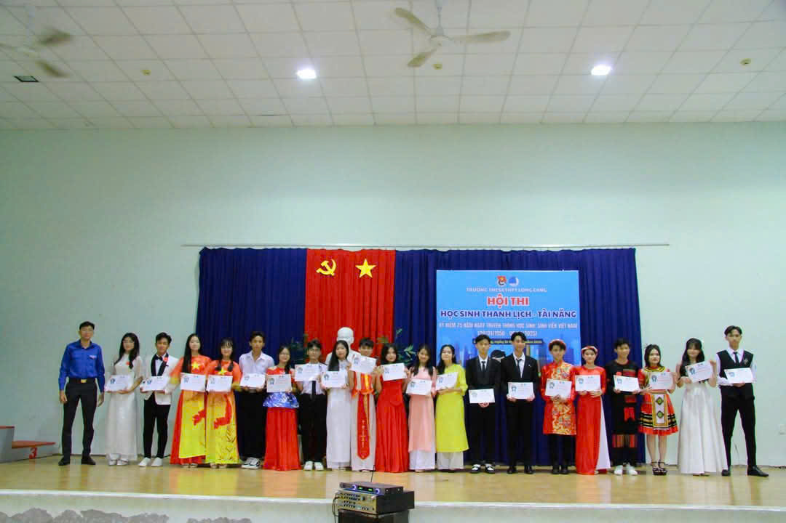
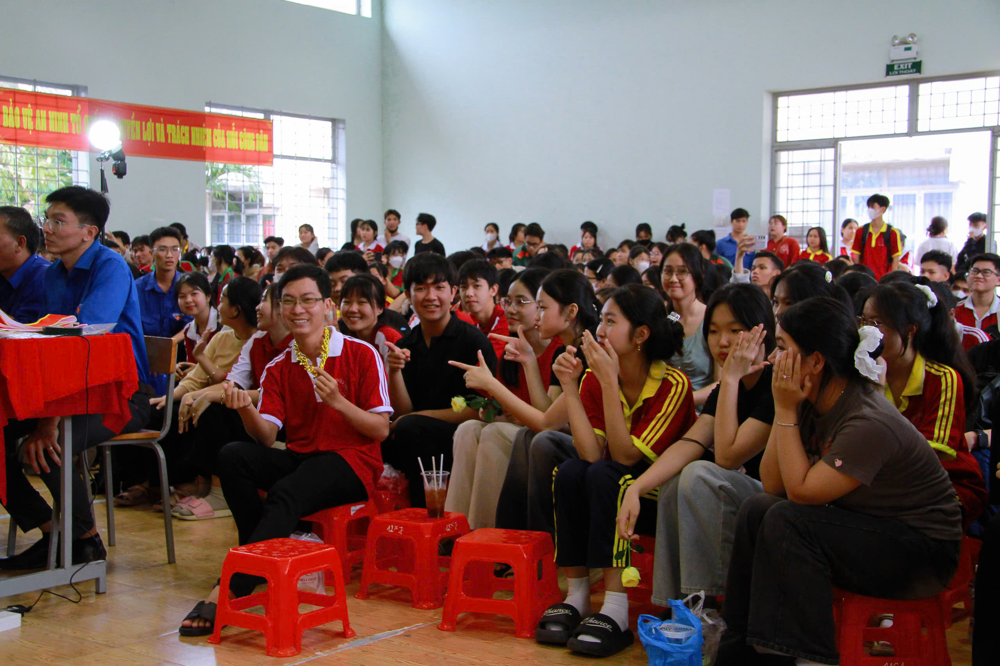
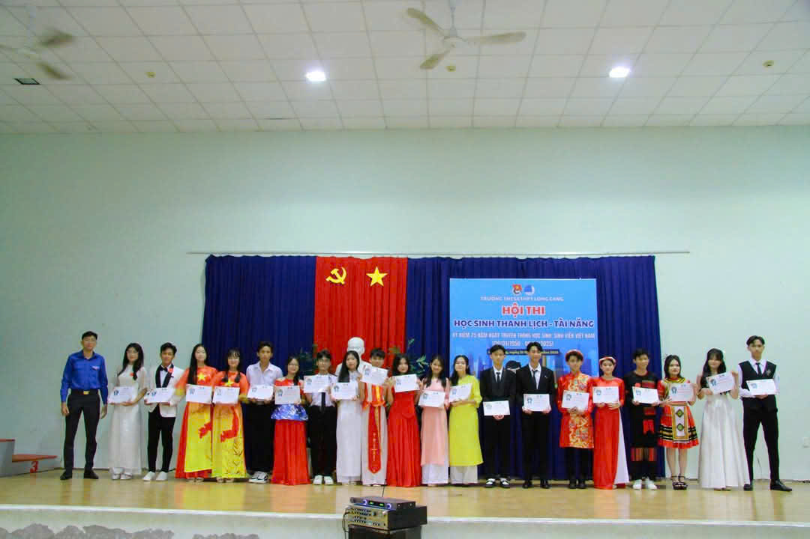
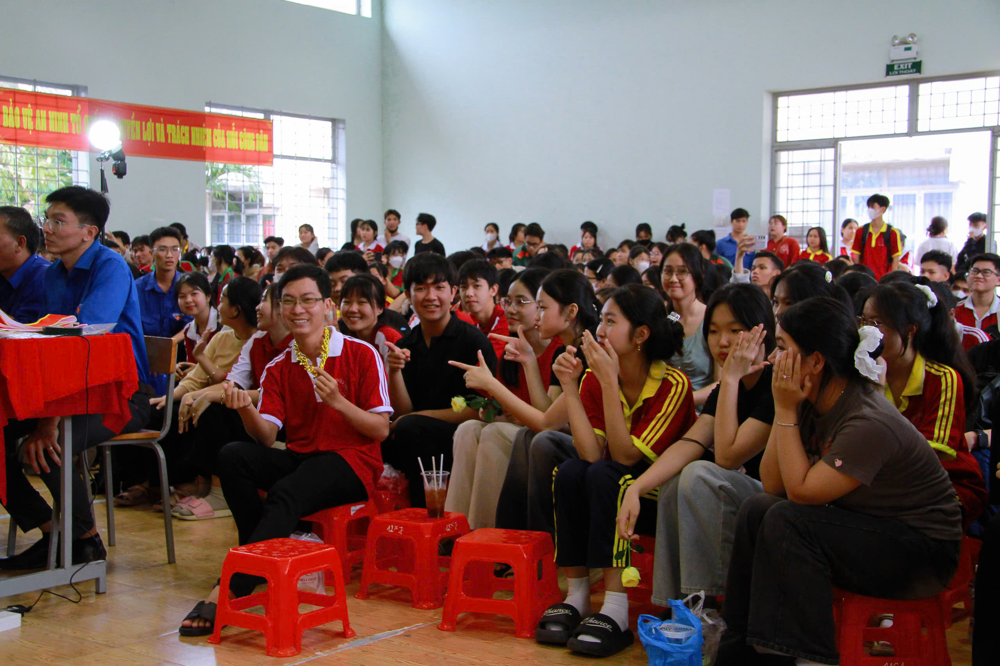
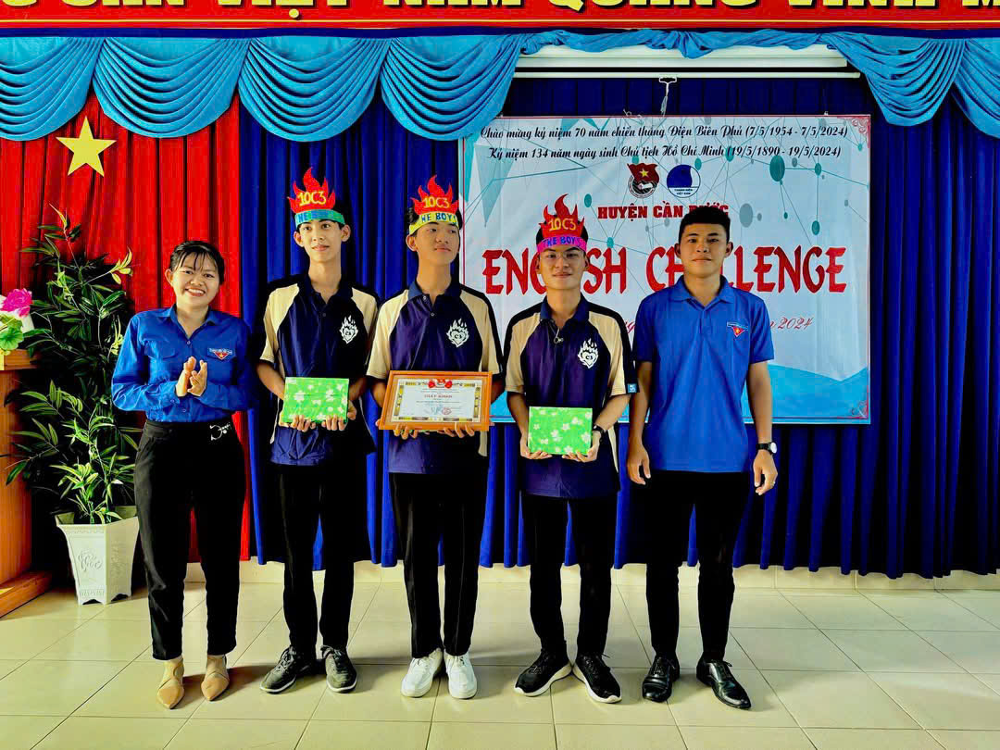
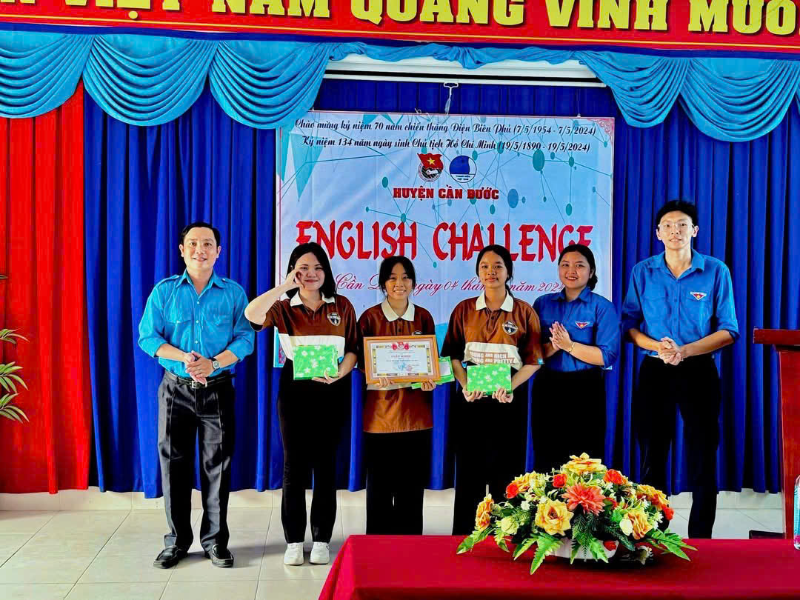
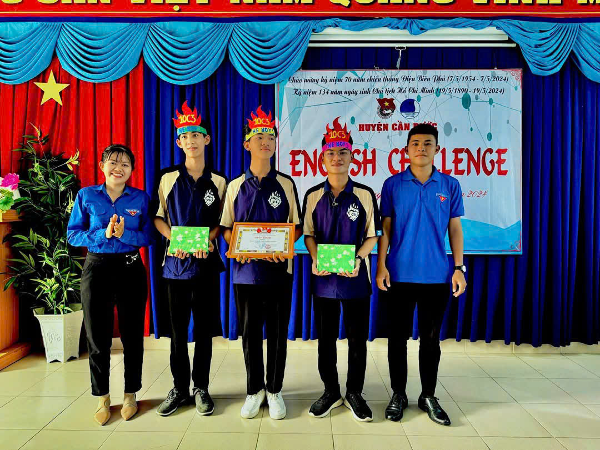
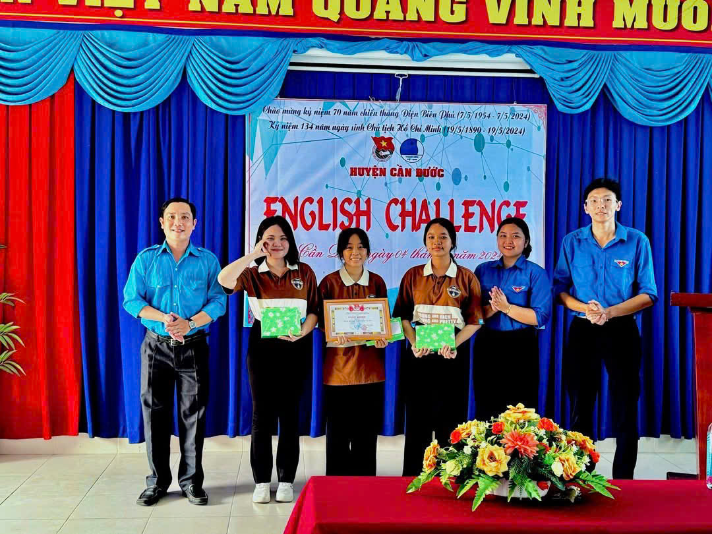
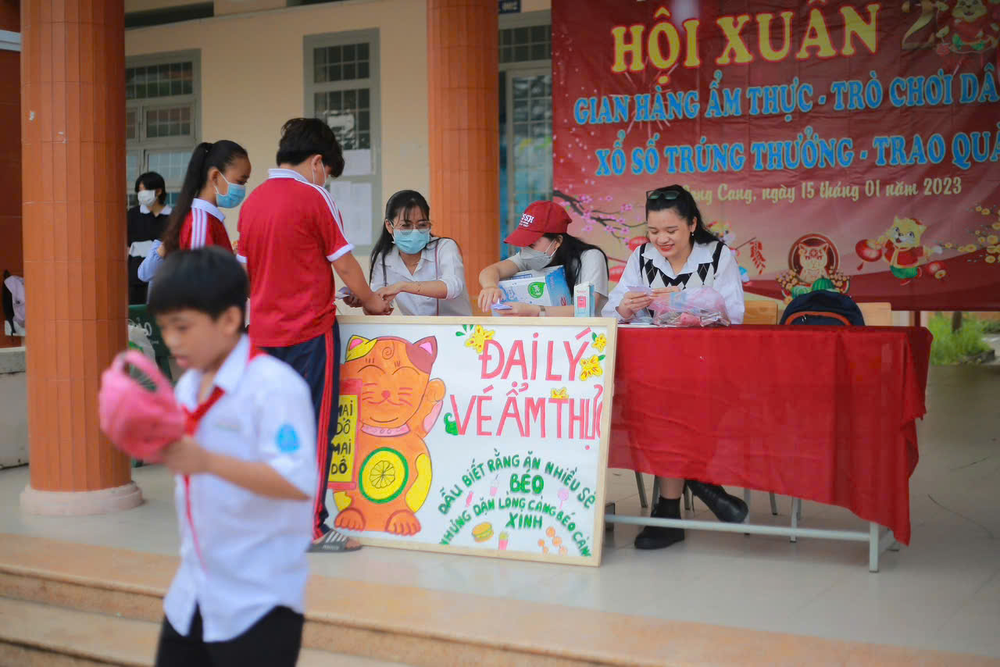
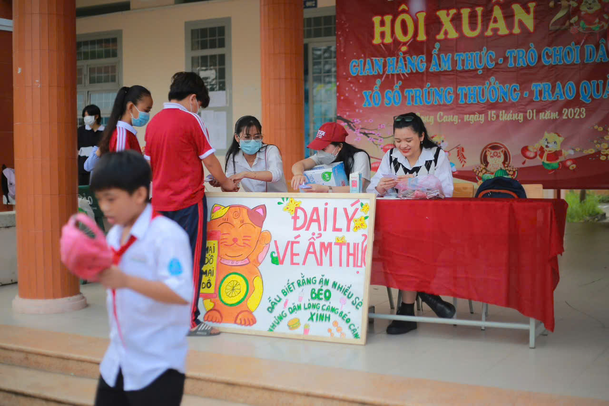

Tiêu đề bài viết
NGÀY NHÀ GIÁO VIỆT NĂM 20/11
Thủ tướng Phạm Văn Đồng từng nói: “Nghề dạy học là nghề cao quý nhất trong những nghề cao quý.” Ngày 20/11 là dịp để tri ân những người thầy tận tâm, không ngừng “gieo mầm xanh” cho tương lai.
🌺 Thầy cô là ngọn đèn soi sáng tri thức, là những người lái đò cần mẫn đưa bao thế hệ học trò sang sông. Hôm nay, hãy để những lời cảm ơn, những bó hoa và những cái ôm thay lời tri ân sâu sắc.
💖 Nhân ngày 20/11, kính chúc các thầy cô dồi dào sức khỏe, tràn đầy nhiệt huyết và luôn hạnh phúc trên hành trình giáo dục cao quý!
HỘI THAO
🤾♂️GIẢI THỂ THAO TRUYỀN THỐNG - CHÀO MỪNG KỶ NIỆM 42 NĂM NGÀY NHÀ GIÁO VIỆT NAM🎇
🎉 Hoà cùng không khí vui tươi, phấn khởi của đoàn viên thanh niên cả nước nói chung, của đoàn viên thanh niên trường THCS&THPT Long Cang nói riêng đang ra sức thi đua lập nhiều thành tích chào mừng kỷ niệm 42 năm ngày nhà giáo Việt Nam (20/11/1982 – 20/11/2024).
⏰Ngày 03/11/2024 BCH đoàn trường tổ chức khai mạc Giải thể thao truyền thống chào mừng kỷ niệm 42 năm ngày nhà giáo Việt Nam. Giải thể thao trường THCS&THPT Long Cang được tổ chức thường niên vào tháng 11 hàng năm.
Giải đấu lần này tiếp tục khẳng định sự lớn mạnh của phong trào thể dục thể thao trong toàn trường và đã trở thành một hoạt động rất bổ ích, đầy ý nghĩa. Qua đó thúc đẩy phong trào thể thao trong đoàn viên thanh niên, phong trào rèn luyện sức khoẻ theo Gương Bác Hồ vĩ đại đáp ứng nhu cầu nguyện vọng rèn luyện thể dục thể thao của cán bộ, đoàn viên, thanh niên trong toàn trường.
💥 Hoạt động thu hút 780 vận động viên từ các chi đoàn đăng kí thi đấu ở các nội dung bóng đá, bóng chuyền, cầu lông, đá cầu. Các vận động viên thi đấu các nội dung từ 03/11 - 19/11/2024.
Cùng chờ đón ai sẽ là nhà vô địch để nâng cao chiếc 🏆 ở các nội dung Bóng đá nam, nữ - Bóng chuyền nam, nữ./.
---CLB Truyền thông---
🔥Hội trại chào mừng Đại hội Hội LHTN các cấp, nhiệm kỳ 2024 - 2029 được tổ chức ngày 01/2/2024. Tham gia hội trại có sự tham gia của 847 đoàn viên thanh niên, học sinh đại diện cho 21 chi đoàn đang học tập tại trường.
💥Hội trại đã tổ chức các hoạt động giao lưu, vui chơi, giải trí, … nhằm rèn luyện kỹ năng hoạt động tập thể, kỹ năng dã ngoại, kỹ năng đoàn kết tập hợp thanh niên. Đây cũng là dịp để ĐVTN gặp gỡ, giao lưu, học hỏi, trao đổi kinh nghiệm lẫn nhau trong học tập cũng như trong các phong trào hoạt động Đoàn, Hội.
PHONG TRÀO TRANG TRÍ BẢNG
💥💥💥Hưởng hứng phong trào thi đua chào mừng kỷ niệm 41 năm thành lập ngày Nhà giáo Việt Nam (20/11/1982 - 20/11/2023).
⏰️Ngày 10/11/2023 BCH đoàn trường tổ chức Hoạt động "Trang trí báo bảng" với sự tham gia của 21 chi đoàn đang học tập tại trường. Các chi đoàn sẽ trang trí bảng của lớp về chủ đề trường lớp, thầy cô trong thời gian 90 phút. >
🎯 Hoạt động là sân chơi để đoàn viên thanh niên giao lưu, học hỏi, thể hiện năng khiếu của mình, từ đó đạt kết quả tốt hơn trong quá trình học tập./.
Ngày thành lập Đoàn TNCS Hồ Chí Minh
💥💥LỚP ĐOÀN VIÊN MỚI 26/3💥💥
---------
✅✅ Nhằm đẩy mạnh công tác giáo dục truyền thống yêu nước, lý tưởng cách mạng, lý tưởng xã hội chủ nghĩa cho hội viên học sinh góp phần xây dựng tổ chức Đoàn ngày càng phát triển vững mạnh, bổ sung lực lượng chính trị nhằm tăng về quy mô tổ chức và không ngừng nâng cao chất lượng hoạt động của tổ chức Đoàn.
⏰⏰⏰ Chiều ngày 15/3/2024, Đoàn trường THCS&THPT Long Cang đã tổ chức Lễ kết nạp Đoàn viên mới cho 93 thanh niên ưu tú của các chi đoàn khối 10, 11 tại di tích C315.
🍀🍀Lễ kết nạp đoàn viên mới là hoạt động ý nghĩa, thiết thực nhằm giáo dục truyền thống yêu nước, lý tưởng cách mạng cho thanh niên góp phần xây dựng tổ chức Đoàn phát triển ngày càng vững mạnh, 93 học sinh của trường THCS&THPT Long Cang được kết nạp đoàn viên hôm nay là những thành viên tiêu biểu của “Lớp đoàn viên 93 năm ngày thành lập Đoàn TNCS hồ Chí Minh (26/03/1931 - 26/03/2024)”, các đồng chí đều là những thanh niêu ưu tú, có phẩm chất, đạo đức tốt, có nhiều cố gắng, nỗ lực trong học tập. Tin tưởng rằng 93 đoàn viên thanh niên được kết nạp trong dịp này sẽ thực hiện tốt các nhiệm vụ của người đoàn viên, nỗ lực học tập, rèn luyện phấn đấu để nâng cao hiểu biết, khẳng định được vị trí, vai trò của mình trong tổ chức Đoàn, một tổ chức đại diện cho quyền và lợi ích của thanh thiếu nhi, là “Đội dự bị tin cậy của Đảng”... đáp ứng được những yêu cầu của thanh niên trong thời đại mới, trở thành người có ích, luôn xung kích, tình nguyện đi đầu trong các phong trào của Đoàn tham gia phát triển kinh tế - xã hội, xây dựng và bảo vệ Tổ quốc.
HÔI THI THANH LỊCH
💥💥💥 Chào mừng kỷ niệm 75 năm ngày truyền thống Học sinh, sinh viên Việt Nam (9/1/1950 - 9/1/2025)💥💥💥
📢📢📢 Cuộc thi CẶP ĐÔI THANH LỊCH – TÀI NĂNG trường THCS&THPT LONG CANG năm 2024
-Đến tham dự chương trình có đồng chí Trần Thị Thu Nga - Phó bí thư chi bộ, Phó hiệu trưởng nhà trường, đồng chí Lê Tấn Đạt - chủ tịch công đoàn trường, đồng chí Nguyễn Thanh Nhựt Tài - Bí thư đoàn trường, cùng quý thầy cô và hơn 300 học sinh tham dự với bầu không khí vô cùng sôi nổi.
Đây là dịp để các thí sinh được giao lưu, học hỏi, thể hiện tài năng, nét đẹp truyền thống, tính năng động, sáng tạo và tinh thần đoàn kết cho học sinh trong nhà trường. Niềm đam mê, nhiệt huyết của các thí sinh sẽ lan toả, truyền cảm hứng và thắp sáng những ước mơ, hoài bão tốt đẹp hơn trong tương lai cho tất cả các ĐVTN.
 



ENGLISH CHALLENGE
Ngày 4/5/2024, tại trường THCS&THPT Long Cang,
Huyện đoàn, Hội LHTN Việt Nam huyện Cần Đước tổ chức sân chơi tiếng Anh huyện Cần Đước năm 2024 -
English Challenge. Tham dự chương trình có đồng chí trong Ban Thường vụ Huyện đoàn, cán bộ đoàn các xã
Cụm thi đua Khôi Vùng Thượng, các thây cô và 60
ĐVTN, học sinh.
* Sân chơi diễn ra với sự tham gia của 08 đội thi tranh tài ở 03 phân thi: Thi trắc nghiệm khách quan trên nên tảng ứng dụng Quizz; Thi phát âm trên nên tảng của Google Translate; Thi diễn đạt ngôn ngữ thông qua trò chơi "Hiểu ý đồng đội".... Nội dung các câu hỏi là các kiến thức Tiếng Anh cơ bản ở chương trình THPT và kiên thức xã hội.
Kết thúc sân chơi, BTC đã trao 01 giải Nhất, 01 giải Nhì, 01 giải Ba,05 giải phụ cho các đội thi xuất sắc.
* Dịp này, Huyện đoàn, Hội LHTN Việt Nam huyện cũng tổ chức Chương trình giao lưu tiếng Anh với giáo viên ngoại ngữ, tham gia các trò chơi tiếng Anh hấp dẫn, thu hút đông đảo ĐVTN tham gia.
Hoạt động nhằm góp phần nâng cao năng lực ngoại ngữ cho ĐVTN trên địa bàn huyện, đồng thời tạo sân chơi lành mạnh, bổ ích để ĐVTN kiểm tra, đánh giá năng lực của bản thân, giao lưu, học hỏi và chia sẻ những kinh nghiệm trong việc học Tiếng Anh./.
 



PHONG TRÀO THĂM DI TÍCH LỊCH SỬ
💥MÔ HÌNH "MỖI TUẦN MỘT DI TÍCH LỊCH SỬ - VĂN HÓA"💥🎯
- CHÙA TÔN THẠNH
- KHẢO CỔ HỌC RẠCH NÚI
-CHÙA PHƯỚC LÂM
-NHÀ TRĂM CỘT
HÀNH TRÌNH ĐỎ
🇻🇳🇻🇳 Hành trình VỀ ĐỊA CHỈ ĐỎ chào mừng kỷ niệm 68 năm Ngày truyền thống Hội LHTN Việt Nam (15/10/1956 - 15/10/2024), kỷ niệm 156 năm anh hùng dân tộc Nguyễn Trung Trực hy sinh (12/9/1868-12/9/2024 ÂL), kỷ niệm 110 năm ngày sinh đồng chí Lý Tự Trọng (20/10/1914 - 20/10/2024).
⏰️⏰️ Sáng ngày 19/10/2024, BCH Đoàn trường, UB Hội LHTN trường THCS&THPT Long Cang tổ chức hành trình về địa chỉ đỏ tại khu di tích Lịch sử Vàm Nhựt Tảo với sự tham dự của 150 đoàn viên thanh niên, hội viên.
🎯🎯 Tại đây các bạn đoàn viên được tham quan, dâng hương, tìm hiểu về Khu di tích lịch sử Vàm Nhựt Tảo - nơi gắn liền với chiến công vang dội đốt tàu chiến Pháp của Anh hùng dân tộc Nguyễn Trung Trực. Vàm Nhựt Tảo là nơi ghi dấu chiến công vang dội đốt tàu Pháp của anh hùng dân tộc Nguyễn Trung Trực. Đây là lần đầu tiên và cũng là lần duy nhất trong phong tào vũ trang kháng Pháp cuối thế kỷ XIX, nghĩa quân đánh chìm được một tàu chiến của địch. Chiến công “hỏa hồng Nhựt Tảo” còn là minh chứng cho tinh thần dũng cảm, sự thông minh, mưu trí của nghĩa quân chỉ với vũ khí thô sơ mà đánh bại được tàu to súng lớn của kẻ thù. Bởi những ý nghĩa ấy, Vàm Nhựt Tảo đã được Bộ Văn hóa Thông tin xếp hạng là di tích Quốc gia năm 1996.
💥💥 Thông qua hành trình, góp phần bồi đắp thêm tình yêu quê hương, đất nước, củng cố niềm tin của tuổi trẻ trường THCS&THPT Long Cang; từ đó, giúp đoàn viên, thanh niên cố gắng phấn đấu học tập, nghiên cứu, không ngừng hoàn thiện bản thân, đóng góp sức trẻ và tinh thần tình nguyện cho sự phát triển chung của quê hương, đất nước./
---CLB Truyền Thông---
HỘI XUÂN LỄ HỘI ẨM THỰC
🔴 HOẠT ĐỘNG NÂNG CAO ĐỜI SỐNG VĂN HÓA TINH THẦN CHO ĐOÀN VIÊN THANH NIÊN.
🔸 Chào mừng kỷ niệm 93 năm ngày thành lập Đảng Cộng sản Việt Nam và mừng năm mới, Xuân Quý Mão 2023.
⏱ Ngày 15/01/2023 BCH đoàn trường tổ chức Gian hàng ẩm thực với 20 gian hàng được chào bán từ các chi đoàn và hơn 1500 học sinh, giáo viên tham gia.
🎯 Đây là hoạt động truyền thống hằng năm của trường nhằm giúp đoàn viên thanh niên, học sinh thể hiện sự khéo tay cũng như tạo đoàn kết gắn bó của các thành viên trong lớp. Giúp các em học sinh trau dồi kinh nghiệm nấu nướng, có thêm kĩ năng sống, yêu thích lao động, biết quan tâm đến người khác bằng những việc làm cụ thể và từ đó các em cũng trưởng thành hơn
 
